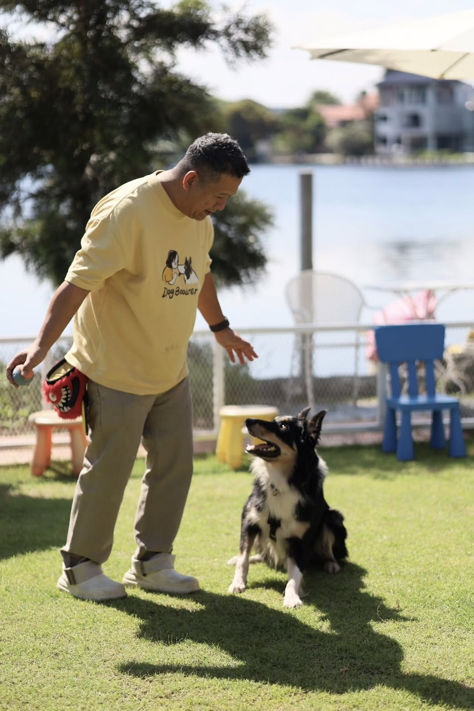

หลายคนเข้าใจว่าการจะเปลี่ยนนิสัยน้องหมาให้เป็นอย่างที่เราต้องการ ต้องส่งไปโรงเรียนเท่านั้น
แต่ความจริงคือนิสัยของหมา ถูกสร้างขึ้นจากสิ่งเล็ก ๆ รอบตัวเขาในทุกวัน
บางเหตุการณ์ทำให้เขามั่นใจขึ้น บางเหตุการณ์ทำให้เขากังวล ทุกการตอบสนองของเรา—ดีหรือไม่ดี กำลัง “ปั้นนิสัย” เขาไปทีละนิด
เขาเรียนรู้จาก เรา และ สภาพแวดล้อม ตลอดเวลา
ทำไมเราไม่เริ่มเรียนรู้ภาษาของเขา? ทำไมไม่ลองปรับวิธีสื่อสารให้เป็นแบบที่หมาฟังแล้ว “เข้าใจจริง ๆ”?
เพราะสุดท้ายแล้วเราคือคนเดียว ที่จะอยู่ดูแลหัวใจของเขาตลอดไป ❤️